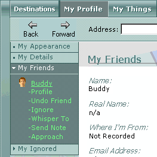

In Desktop World, you can add members of the Desktop World community to your My Friends list, which is located on the My Profile menu. A person you've added to your My Friends list can view your private profile information. You can send notes or gifts to people on your My Friends list either individually or all at once. The list of names is saved between sessions in Desktop World.

When you want to add someone to your My Friends list, that person receives a system message asking if they want to accept or not. You will see a similar message if others want to add you to their list.
- Click the People tab
 .
.
The People menu appears in the legend.
- Click the name of the member you would like to add.
- From the list of options that appears, click Make Friend.
A message is sent to that person that asks for that person's permission to add them to your friends list. If the other person clicks Yes, he or she is added to
your list.
Note You may also add a member to your
My Friends list by right-clicking either a member in the 3-D view, or their name in the
People menu. From the shortcut menu that appears, click
Add to Friends List.